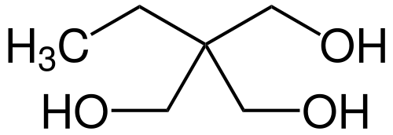

Trimethylolpropane
Trimethylolpropane (TMP) is the organic compound with the formula CH3CH2C(CH2OH)3. This colourless to white solid with a faint odor is a triol. Containing three hydroxy functional groups, TMP is a widely used building block in the polymer industry.
 | |
| Names | |
|---|---|
| IUPAC name
2-(hydroxymethyl)-2-ethylpropane-1,3-diol | |
| Other names
TMP, 2-ethyl-2-hydroxymethyl-1,3-propanediol | |
| Identifiers | |
CAS Number |
|
3D model (JSmol) |
|
| ChemSpider | |
| ECHA InfoCard | 100.000.978 |
| EC Number |
|
| MeSH | C018163 |
PubChem CID |
|
| UNII | |
CompTox Dashboard (EPA) |
|
InChI
| |
SMILES
| |
| Properties | |
Chemical formula |
C6H14O3 |
| Molar mass | 134.17 g/mol |
| Appearance | White solid |
| Odor | Faint odor |
| Density | 1.084 g/mL |
| Melting point | 58 °C (136 °F; 331 K) |
| Boiling point | 289 °C (552 °F; 562 K) |
| Hazards | |
| NFPA 704 (fire diamond) |
3 |
| Flash point | 172 °C (342 °F; 445 K) |
Except where otherwise noted, data are given for materials in their standard state (at 25 °C [77 °F], 100 kPa). | |
| Infobox references | |
Production
TMP is produced via a two step process, starting with the condensation of butanal with formaldehyde:
- CH3CH2CH2CHO + 2 CH2O → CH3CH2C(CH2OH)2CHO
The second step entails a Cannizaro reaction:
- CH3CH2C(CH2OH)2CHO + CH2O + NaOH → CH3CH2C(CH2OH)3 + NaO2CH
Approximately 200,000,000 kg are produced annually in this way.[1]
Applications
TMP is mainly consumed as a precursor to alkyd resins. Otherwise, acrylated and alkoxylated TMP's are used as multifunctional monomers to produce various coatings, Ethoxylated and propoxylated TMP, derived condensation of from TMP and the epoxides, are used for production of flexible polyurethanes. Allyl ether derivatives of TMP, with the formula CH3CH2C(CH2OCH2CH=CH2)3-x(CH2OH)x are precursors to high-gloss coatings and ion exchange resins. The oxetane "TMPO" is a photoinduceable polymerisation initiator.[1]
References
- Peter Werle, Marcus Morawietz, Stefan Lundmark, Kent Sörensen, Esko Karvinen, Juha Lehtonen “Alcohols, Polyhydric” in Ullmann’s Encyclopedia of Industrial Chemistry, Wiley-VCH, Weinheim, 2008.